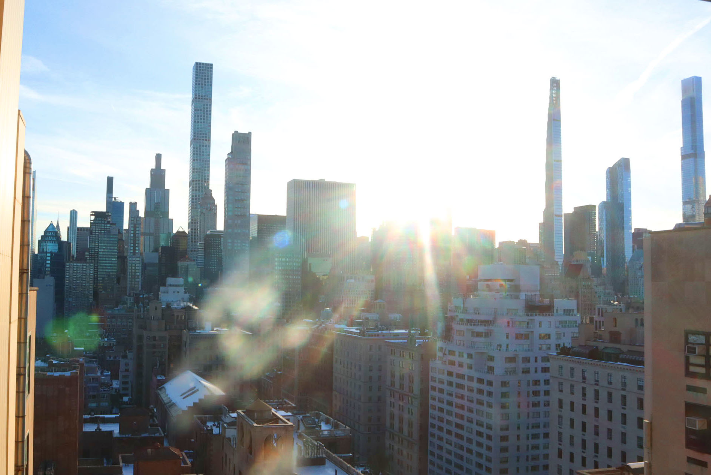
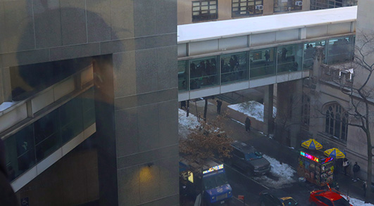

I chose to photograph this landscape because it captures the essence of the grey almost dull city with the contrast of the bright sun and the blue sky. The juxtaposition of the two elements creates an interesting visual dynamic. I wanted to highlight how even in a seemingly boring envirment, there is still beauty to be found. Often as a native New Yorker, the city doesnt seem to have the same effect on me as it does on toursit and newcomers. By focusing on the sky and the sunlight, I aimed to showcase a different perspective of the city, one that shows how staurated and virbant it can be.

This image was taken on the hunter skybridge and I chose to subject of the bridge across however I foud myself drawn to the man in the corner who looks as if hes looking out the window. I cropped the image to focus on this story as it looks like the man is looking out the window and reflecting on his thoughts. The bridge serves as a backdrop to this moment of introspection, adding a sense of depth and context to the image. By cropping the image to focus on the man, the story is much more clear, rather than just being a wide shot. Additioanlly I played with the saturation and contrast to make the image more vibrant and to draw attention to the man. More specifically I I increased the saturation of the yellow, adding a sort of halo around the man. This further emphasizes his presence and creates a visual focal point that draws the viewer's eye directly to him.